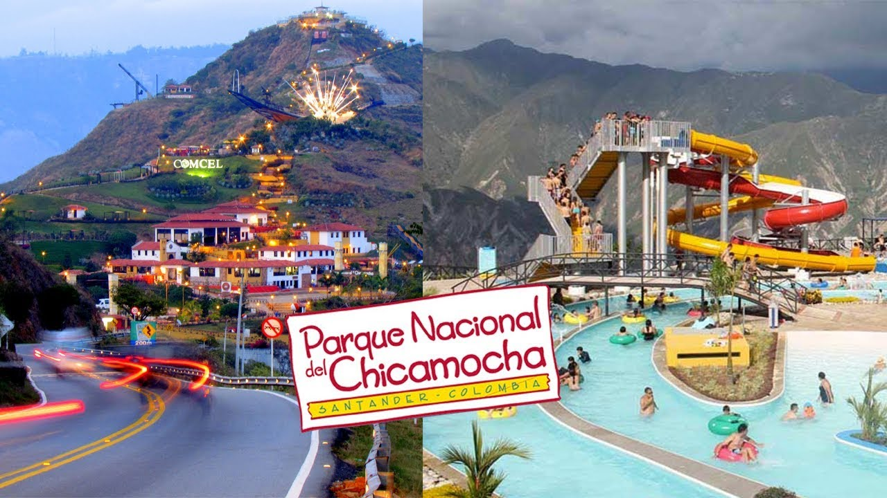
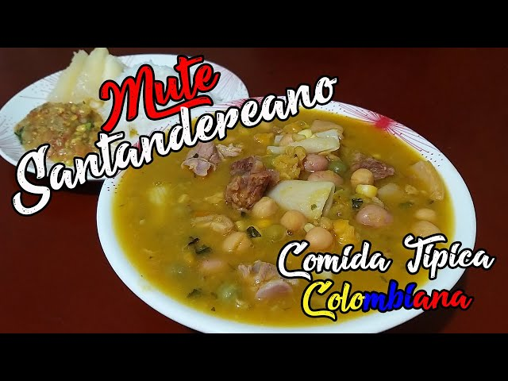

SANTANDER
REGIÓN: ANDINA
PUNTO DE INTERES
PARQUE NACIONAL DEL CHICAMOCHA

DESCRIPCION
Destino de talla mundial, un lugar único y encantador en Colombia, que cautiva a Nacionales y Extranjeros por su belleza natural, ya que se encuentra ubicado en el imponente Cañón del Chicamocha en Santander, el cual puedes atravesar en un teleférico, lo que lo hace una obra única en el mundo.
GASTRONOMIA

Mute: es una sopa que se prepara con diferentes ingredientes que se complementan perfectamente: carne, tripa, costilla de res, granos, papa, pastas, maíz y especias.